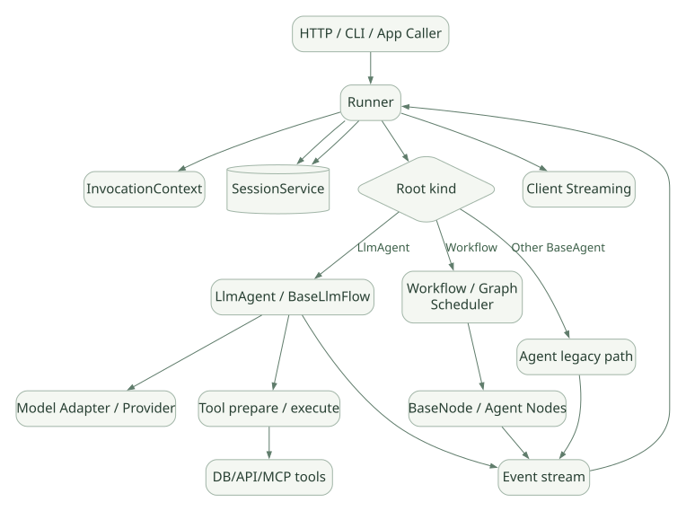

SECOND STUDY / 실행 계층과 요청 진입
실행 계층과 요청 진입
이번 단원의 읽는 관점
Runner·LlmAgent·Flow·Workflow·Services의 책임과 버전 경계를 나누고 Invocation을 추적합니다.
살펴볼 경계사용자 입력 한 건과 Invocation·Event·Session, 신규 요청과 Resume를 구분하세요.
이 페이지의 세부 목차
Part I. 실행 엔진이 무엇을 책임지는가
1. ADK는 SDK인가, Framework인가, Harness인가?#
쉬운 설명: google-adk는 Python 패키지로 설치하는 개발 도구이면서, Agent 실행 루프·도구·세션·워크플로·평가 관련 추상화를 제공하는 프레임워크다. SDK는 배포 형태, Framework는 제어 구조, Harness는 모델 주위 실행 환경과 정책의 역할을 강조하는 말이므로 배타적이지 않다. [DOC]
정확한 설명: ADK의 LlmAgent는 모델에 도구·지시문을 제공하고, BaseLlmFlow는 모델 요청·도구 결과의 반복을 조직하며, Runner는 외부 Session/Memory/Artifact 서비스와 이벤트 실행 수명주기를 이어 준다. Workflow는 LLM이 다음 단계를 자유롭게 결정하는 루프와 다른, 명시적인 그래프 오케스트레이션이다. 모델 추론 자체는 Google GenAI 또는 어댑터 뒤의 외부 모델이 담당한다. [SRC: S01–S03, S10]
가로로 이동해서 읽을 수 있습니다. 도식 크게 보기 ↗

원문의 학습용 도식입니다. 연결 방향·분기 조건·점선·쌍방향 연결을 보존해 세로로 배치했습니다. 실제 구현·의사코드·해석의 구분은 본문을 함께 읽으세요.
도식 원문 보기 (Mermaid)
flowchart TD
C[HTTP / CLI / App Caller] --> R[Runner]
R --> CTX[InvocationContext]
R --> SS[(SessionService)]
R --> ROOT{Root kind}
ROOT -->|LlmAgent| LA[LlmAgent / BaseLlmFlow]
ROOT -->|Workflow| WF[Workflow / Graph Scheduler]
ROOT -->|Other BaseAgent| AG[Agent legacy path]
LA --> MC[Model Adapter / Provider]
LA --> TE[Tool prepare / execute]
WF --> NODE[BaseNode / Agent Nodes]
TE --> SVC[DB/API/MCP tools]
LA --> EV[Event stream]
NODE --> EV
AG --> EV
EV --> R
R --> SS
R --> OUT[Client Streaming]주의: 개념도이며 모든 내부 Call Stack을 그대로 재현하지 않는다. 특히 v2.13.0의 LlmAgent 루트는
Runner._run_node_async()경로를 사용하는 점이 중요하다. [S01]
프레임워크가 제공하지 않는 보장#
- 모델 출력의 사실성, Tool 반환의 의미 정확성, 내부 권한 부여 정책, 물리적 프로세스 격리, 외부 API의 Exactly-once 처리를 자동 보장하지 않는다.
- SDK 기능이 있음과 모든 모델·Provider에서 완전히 동일하게 동작함은 다르다.
- Session/Memory 구현이 존재해도 영구 DB, 데이터 보존 정책, 보안 운영 설정은 별도로 필요하다.
2. 버전 경계: ADK 1.x와 2.13.0을 혼동하지 않기#
v2.13.0 릴리스는 2026-10-22 날짜로 기록되며 PyPI 업로드는 2026-10-23로 표시된다. 이는 타임존·배포 시각 차이와 구별할 정보다. [R01]
핵심 이행은 다음 세 축이다.
| 이전에 익숙한 구조 | v2.13.0의 중요한 차이 | 조사 의미 |
|---|---|---|
LlmAgent + BaseLlmFlow |
여전히 핵심 실행 경로 | Agent Loop 자체를 분석 |
SequentialAgent·ParallelAgent·LoopAgent |
레거시 패턴 유지, ParallelAgent는 deprecated |
예제 가용성과 장기 API 방향 분리 |
새 Workflow |
BaseNode, Graph, 실행 노드 상태, Event replay, checkpoint |
모델 자율 실행과 결정적 Workflow 구분 |
Runner(agent=...) |
App/Node의 호환·정규화 경로, 루트 유형별 분기 |
오래된 Runner 호출 설명을 그대로 사용하지 않음 |
과거 functions.py 중심 Tool 처리 |
실제 구현은 flows/llm_flows/tools/ 내부 여러 파일로 분리 |
최신 함수 위치를 확인 |
[SRC] ParallelAgent의 deprecation 문구에는 Workflow가 아직 LlmAgent의 Subagent로 바로 사용되는 모든 상황을 대체하지 못한다는 제약도 기재되어 있다. 단순히 “대체 완료”로 설명하지 않는다. [S09]
3. 코드 맵: 파일마다 책임은 무엇인가?#
| 역할 | 핵심 파일(v2.13.0) | 주요 추적 지점 |
|---|---|---|
| 외부 실행 | src/google/adk/runners.py |
Runner.run_async, _run_node_async, _process_and_append_event |
| LLM Agent | agents/llm_agent.py |
_run_async_impl, _llm_flow, _run_impl |
| LLM 반복 | flows/llm_flows/base_llm_flow.py |
run_async, _run_one_step_async |
| Tool Batch | flows/llm_flows/tools/_batch_executor.py |
_prepare_function_calls, _gather_or_cancel, handle_function_call_list_async |
| Tool 한 건 | flows/llm_flows/tools/_caller.py |
_prepare_single, _execute_single_prepared_call_async |
| 함수형 Tool | tools/function_tool.py |
FunctionTool.run_async, 스키마·타입 검증 |
| Event | events/event.py |
Event, is_final_response, NodeInfo |
| 세션 저장 계약 | sessions/base_session_service.py |
append_event, temp: 처리 |
| 구형 병렬 Agent | agents/parallel_agent.py |
_merge_agent_run, asyncio.TaskGroup |
| Graph 데이터 | workflow/_graph.py |
Graph, Edge, RoutingMap |
| Workflow 엔진 | workflow/_workflow.py |
_run_impl, _run_loop, _handle_completion, _emit_node_checkpoint |
| Node 정규화 | workflow/_base_node.py |
BaseNode.run, _run_impl |
| 실행 컨텍스트 | agents/invocation_context.py |
Session/Plugin/Tool/Abort/Resume 참조 |
모든 경로는 [S01–S13]의 버전 고정 링크를 사용한다. 소스의 함수가 바뀌면 해당 Git tag를 바꿔 재검증해야 한다.
4. Runner.run_async(): 사용자 입력이 시스템 안으로 들어오는 순간#
[SRC] Runner.run_async()는 user_id, session_id, new_message, invocation_id, state_delta, run_config, abort_signal 등을 받는다. 루트가 LlmAgent인지 Workflow 노드인지, 다른 BaseAgent인지에 따라 실행 경로가 달라진다. [S01, run_async]
Caller
└─ Runner.run_async(user_id, session_id, new_message, ...)
├─ Root = LlmAgent → effective_mode(chat/task) 확인
│ → Session 조회/생성 → _run_node_async(...)
├─ Root = BaseNode(not BaseAgent) → _run_node_async(...)
└─ 기존 BaseAgent 경로 → InvocationContext 구성
→ plugin wrapper / event loop특히 v2.13.0 코드에는 LlmAgent 루트에서 기본 chat mode를 결정하고, task mode의 완료 결과를 terminal event의 output으로 전달하는 구분이 나타난다. [SRC: S01]
실행 전 검증#
- 입력
Content가 다른 role로 들어와도user역할로 정규화하는 로직이 있다. - 사용자 메시지에
function_call을 직접 끼워 넣는 것을 거부하는 검사도 존재한다. 이는 사용자 메시지가 Tool 호출을 위조하지 못하게 하는 입력 무결성 경계다. [S01] - 이미 존재하는 Session을 찾을지, 새로 생성할지는
SessionService/Runner 설정에 달려 있다.
새 Invocation과 Resume의 차이#
| 새 요청 | Resume 요청 |
|---|---|
| 새 사용자 입력과 식별자로 Invocation 생성 | 기존 Session 이벤트에서 이어갈 Invocation 확인 |
| 유입 메시지 Event 기록 | 승인 응답·입력 재개 또는 기존 invocation ID 활용 |
| 현재 Flow 시작 | 복원된 Event/상태를 고려해 단계 진행 |
| 새 도구 실행 가능 | 이전 성공 작업의 재실행 여부를 반드시 확인해야 함 |
설계 질문: 서버 요청이 끊겨도 Session은 남을 수 있지만, Tool의 OS 프로세스나 외부 API 호출이 실제로 취소됐다는 보장은 별개다. 호출자 연결 종료/abort_signal/도구의 작업 취소 경계를 분리해서 설명한다.